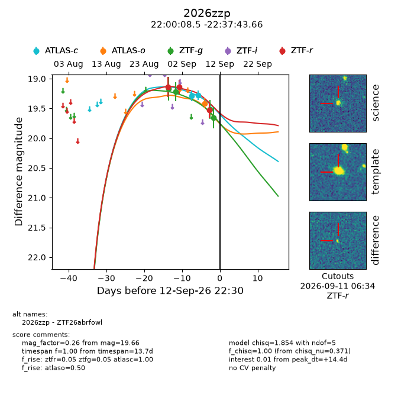
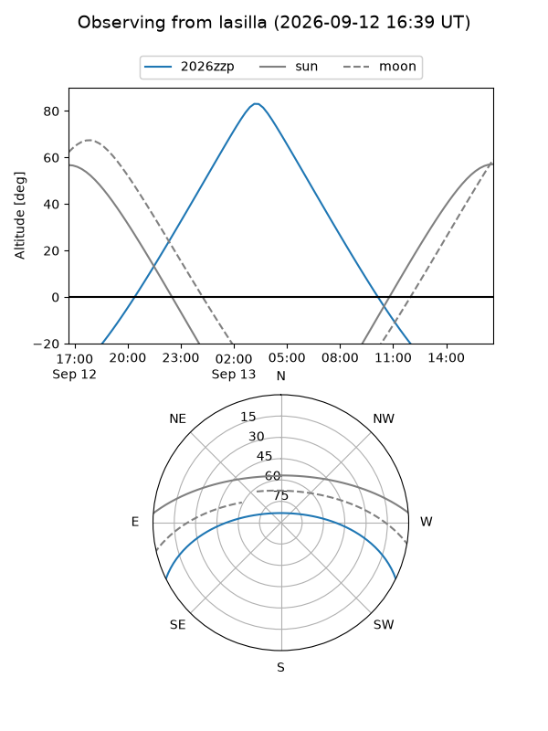
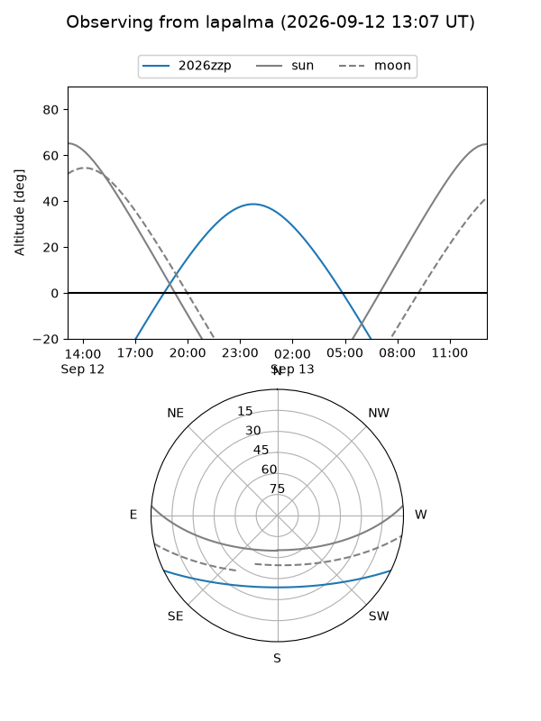
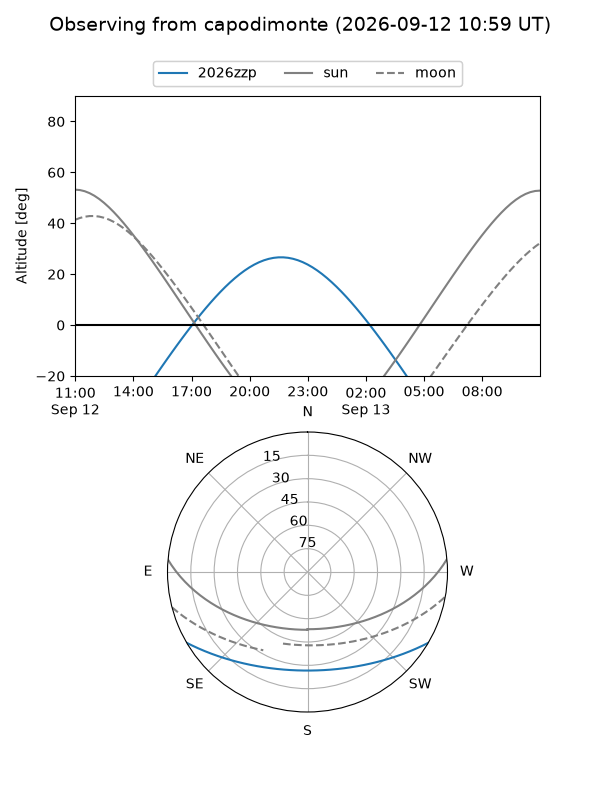
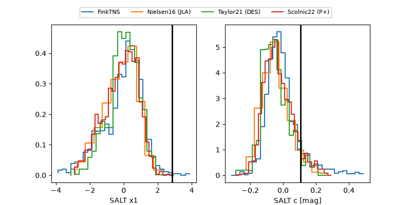

2026zzp
Target 2026zzp at 2026-09-13 10:22
Aliases and brokers:
FINK-ZTF: ztf.fink-portal.org/ZTF26abrfowl
Lasair-ZTF: lasair-ztf.lsst.ac.uk/objects/ZTF26abrfowl
ALeRCE-ZTF: alerce.online/object/ZTF26abrfowl
YSE-PZ: ziggy.ucolick.org/yse/transient_detail/2026zzp
TNS name: wis-tns.org/object/2026zzp
Direct TNS query: direct search
alt names
ZTF26abrfowl (ztf,fink_ztf)
2026zzp (tns,yse)
Coordinates:
equatorial (ra, dec) = 330.0356,-22.62879
equatorial (HMS+DMS) = 22:00:08.54,-22:37:43.66
galactic (l, b) = (29.8540,-51.07338)
Flags:
TNS type: nan
peak dt: +14.9
Photometry:
last atlasc=19.28, atlaso=19.41, ztfg=19.66, ztfr=19.53
2 atlasc, 1 atlaso, 4 ztfg, 3 ztfr detections
Lightcurve

Visibility



Additional plots
